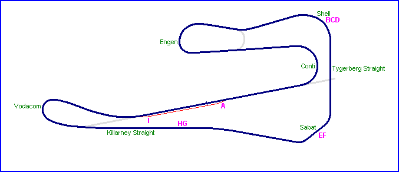
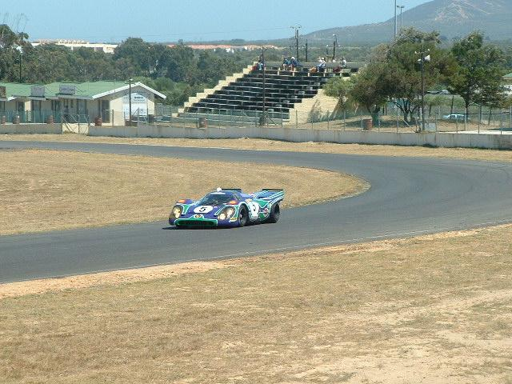
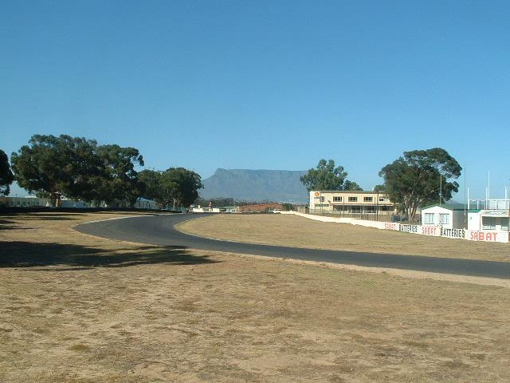
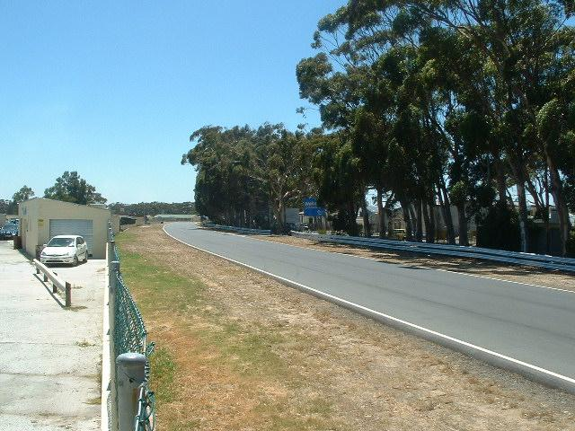
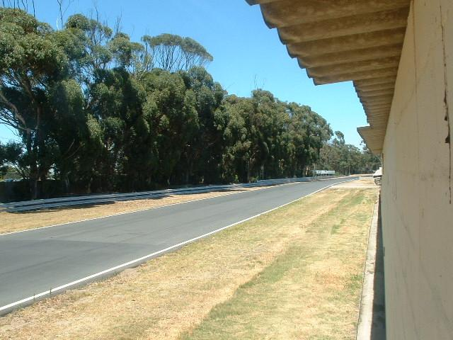
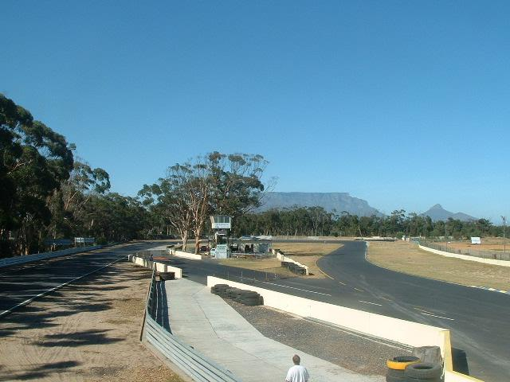

Killarney - Present Circuit [Page 2 of 2]
|| Contents | Original circuit photos | Present circuit photos || Home ||

Letters on the map represent the location of where the pictures were taken. || Page 1 | Page 2
Return to racingcircuits.net's Photo Archive Main Index

E) Porsche 917 entering Sabat corner (ex-Malmesbury Sweep).

F) Exit at Sabat (ex-Malmesbury Sweep) and circuit heading down the Killarney back
straight.

G) Killarney straight looking back towards Sabat (ex-Malmesbury Sweep).

H) Killarney straight leading towards the Vodacom hairpin (ex-Cape Town Corner).

I) Vodacom hairpin (ex-Cape Town Corner). Entrance to pits in the foreground (extreme
right).
Text & Graphics ©Marius Matthee. Reproduced here with kind permission.